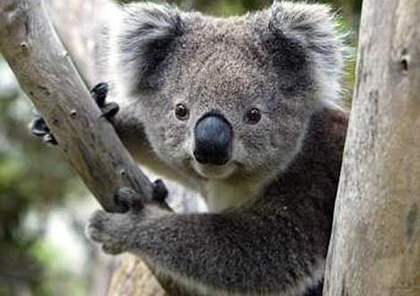

Коала (англ. Koala, лат. Phascolarctos cinereus) — Коала обитает в прибрежных районах на востоке и юге Австралии, на территории от Аделаиды до южной части полуострова Кейп-Йорк, а также на острове Кенгуру, куда они были завезены в начале XX века. Также они распространены в регионах с достаточным количеством влаги для поддержки подходящих коалам лесов. Коалы штата Южная Австралия были в значительной степени уничтожены в течение первой половины XX века, но с помощью особей из штата Виктория популяция коал в Южной Австралии восстановлена. Это животное не обитает в Тасмании и Западной Австралии..
Интересные факты коалах
Коала обитает в прибрежных районах на востоке Австралии. Первые переселенцы на материке давали этому “диковинному зверю” разные названия, среди которых: “ленивец”, “обезьяна”, “медведь” и даже “медведеобезьяна”, видимо, пытаясь провести аналогию со знакомыми им европейскими животными. Но все же, ему оставили имя, унаследованное от древних аборигенов Автралии, – koala, что значит “животное, которое не пьет воду”
А новорожденная коала настолько мала, что весит всего-навсего 3-5 грамм! Лишь через несколько недель она подрастает до размеров пальца человека.
